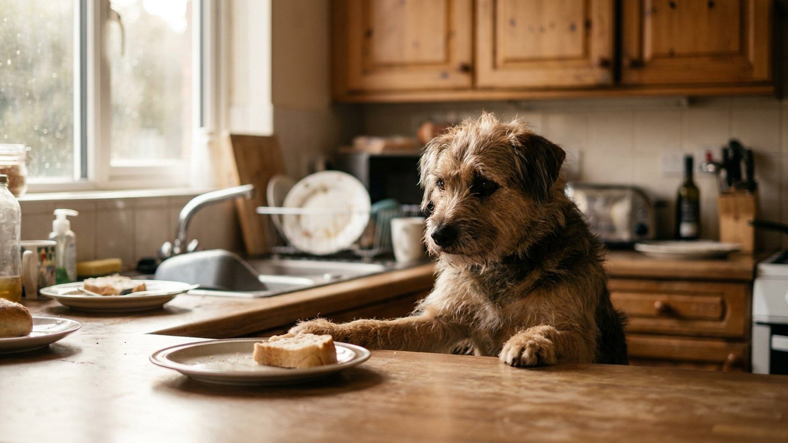

Counter surfing — буквально «серфинг по столешницам» — это когда собака систематически обследует стол, кухонные поверхности и всё, до чего дотягивается нос. Особенно распространено у крупных и средних пород, которым не нужно даже вставать на лапы. Это поведение не исчезнет само — но устраняется за несколько недель при последовательном подходе.
🐾 Питомец ведёт себя странно?
AnimaLife расшифрует поведение кошки и собаки и подскажет, что делать. Попробуйте бесплатно прямо в мессенджере.
Ответ прост: потому что это работает. Собака однажды нашла что-то вкусное на столе — и получила огромное подкрепление. Мозг запомнил: «стол = еда». Теперь проверка стола стала привычной стратегией.
Каждый раз, когда собака снова находит что-то на столе — привычка укрепляется. Каждый раз, когда находит ничего — постепенно затухает, но медленно. Именно поэтому «убирайте еду со стола» — необходимое, но недостаточное условие.
Пока идёт обучение, стол должен быть пустым. Всегда. Это не навсегда, это на время формирования нового паттерна.
Пустой стол = ноль подкреплений = привычка начинает затухать.
Пока навык не сформирован, лучше не давать собаке возможности «тренировать» нежелательное поведение без вас. Закрытая дверь кухни или детские ворота — простое решение.
Собака должна знать, куда идти во время приготовления еды. «Место» — это конкретный коврик или подстилка, на котором собака лежит, пока вы на кухне.
Когда вы видите, что собака тянется к столу:
🐾 Здоровье питомца под контролем
AI-ветеринар, дневник здоровья и персональные советы для вашего питомца — установите AnimaLife бесплатно.
Это более продвинутый навык — собака умеет игнорировать еду на столе по команде.
Если один человек в доме оставляет еду на столе или реагирует иначе — работа замедляется. Договоритесь о правилах: пустой стол и одинаковая реакция — для всех.
Детям объясните дополнительно: не давать собаке еду со стола «просто так», не показывать еду и не провоцировать.
Не все собаки одинаково «ходят по столам». Это связано с ростом, охотничьей историей породы и уровнем мотивации едой.
Если у вас одна из этих пород — управление средой должно быть максимально строгим, особенно в первые месяцы.
Навык «не трогать стол» должен работать не только дома, но и в гостях, на даче, в отеле. Для этого важно тренировать команду «оставь» в разных местах и условиях.
При строгом управлении средой (пустой стол) и ежедневной тренировке — улучшение заметно через 2 недели. Устойчивый навык формируется за 4-6 недель.
Если через месяц активной работы прогресса нет — проверьте, нет ли «дырок» в управлении средой (кто-то оставляет еду на столе), и рассмотрите консультацию кинолога.
Counter surfing — одна из тех привычек, которые исчезают надолго при правильной работе. Собака, научившаяся игнорировать стол, обычно сохраняет этот навык годами — если не получает случайных «выплат» в виде упавшего бутерброда.
Материал носит информационный характер и не заменяет очную консультацию ветеринара.